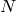

07 - Data Clustering¶
Neural network, K-nearest-neighbour and Bayesian learning algorithms are all supervised learning algorithms. This means that the correct output is made known to the machine by what we might call a teacher.
With unsupervised learning we cannot know whether an answer given is correct or incorrect. Instead we can achieve different goals such as, patterns, relations, and knowledge. This is called data mining.
Motivating Problems¶
With a true colour image 24 bits are used per pixel (8 bits per channel) providing 1677216 possible colours. A gif image uses 8 bits per pixel giving a total of 256 possible colours.
Gifs work by having a table of 256 entries each specifying a red, green and blue value. A reference for each pixel in the image can then be stored (to one of the colour entries in the table) instead of the actual RGB value.
So the problem is how do we choose the pixels to be in the table...
If we take the red, green and blue values of each pixel in the image and use those values as the dimensions in euclidean space we will begin to see groupings of similar colours in 3D space.
Then we can replace gatherings of similar colours (points in euclidean space which are close to each other) with a single colour.
Once the number of euclidean points have been reduced to 256 we can create the gif image.
K-Means¶
An algorithm for partitioning (or clustering)  data points into  disjoint subsets
disjoint subsets  containing data points.
containing data points.
Suppose that our data has  dimensions
dimensions ![[x_{i1}, x_{i2}, ..., x_{in}]](../../../../images/math/dd0b6d1fe22e237ced1c31c91efe985be1336b47.png) for
for  for data points.
for data points.
We want to cluster these points into subsets (clusters), where is preset ( would be 256 in the gif example).
For each cluster, we define a prototype point where , which can be set randomly the first time.
The distance between all euclidean points  and each cluster prototype is calculates as:
and each cluster prototype is calculates as:
A euclidian point is assigned to the jth cluster (meaning  ) if the following condition holds:
) if the following condition holds: